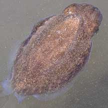

|
|
| cephalopods text index | photo index |
| Phylum Mollusca > Class Cephalopoda > squids and cuttlefishes > Family Sepiidae |
| Smooth
cuttlefish awaiting identification* Family Sepiidae updated May 2020 Where seen? These delightful animals are sometimes commonly seen on our Northern shores. Usually seen among seagrasses. Features: 8-13cm long. Body oval with fins all around the edges, sometimes with glittering spots or dashes. Short fat arms. Body texture generally smooth and does not form into bumps or pimples. Cuttlefishes are difficult to distinguish in the field. The cuttlefishes on this page may not all be of the same species. |
 Chek Jawa, May 03 |
 Tanah Merah, Apr 11 |
*Species are difficult to positively identify without close examination.
On this website, they are grouped by external features for convenience of display.
| Smooth cuttlefishes on Singapore shores |
On wildsingapore
flickr
|
| Other sightings on Singapore shores |
| Filmed on Chek
Jawa on 29 Mar 09 Cuttlefish@ChekJawa29Mar2009 from SgBeachBum on Vimeo. |